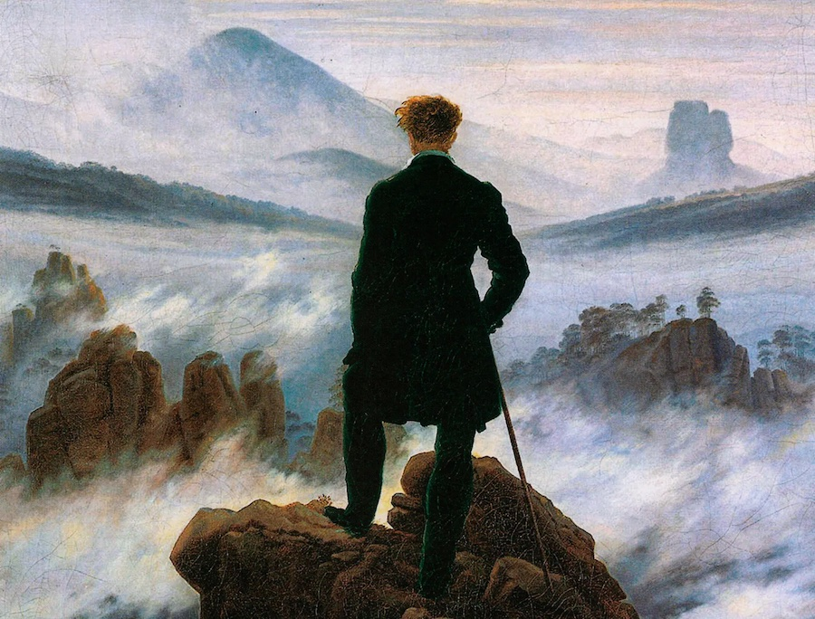

Introducción
El Romanticismo musical fue un movimiento estético y cultural desarrollado principalmente durante el siglo XIX, en el cual la música se convirtió en un medio privilegiado para la expresión de la subjetividad, la emoción profunda y la libertad creativa del individuo.
Frente al equilibrio formal del Clasicismo, el Romanticismo propuso una expansión del lenguaje musical, una valoración del sentimiento por encima de la razón y una nueva concepción del artista como creador autónomo. La música dejó de ser únicamente una estructura ordenada para convertirse en una manifestación del mundo interior del ser humano.
Caspar David Friedrich – Paisaje representativo del espíritu romántico

Desarrollo histórico del Romanticismo musical en el siglo XIX